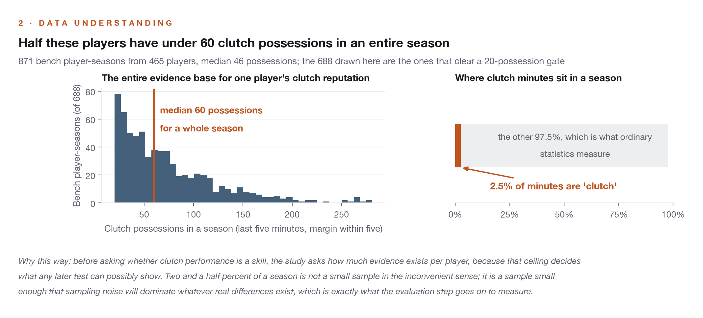
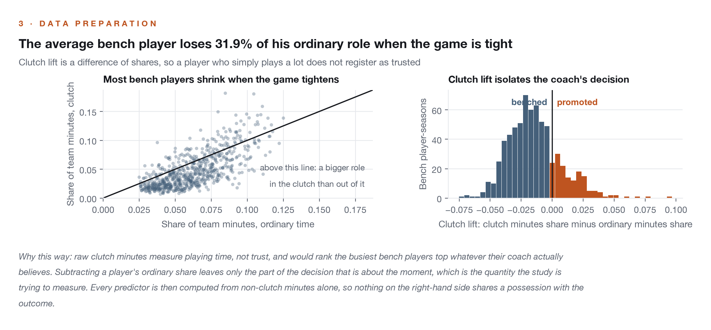
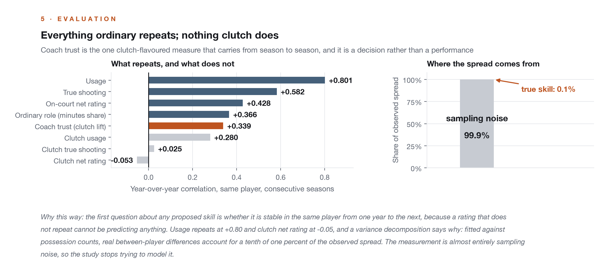
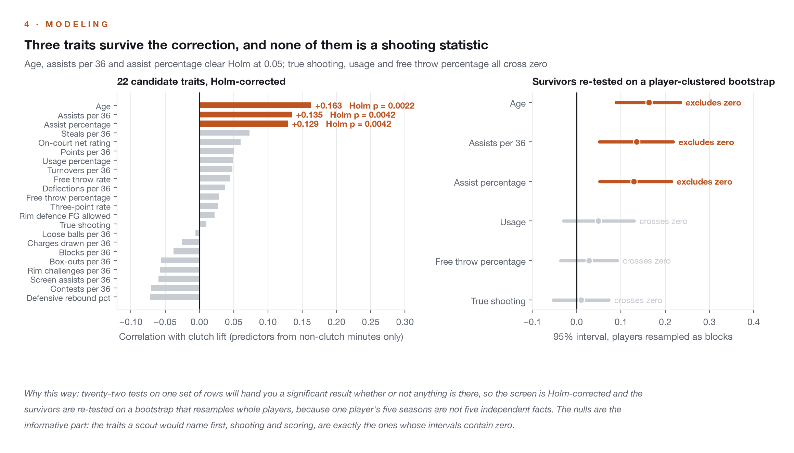
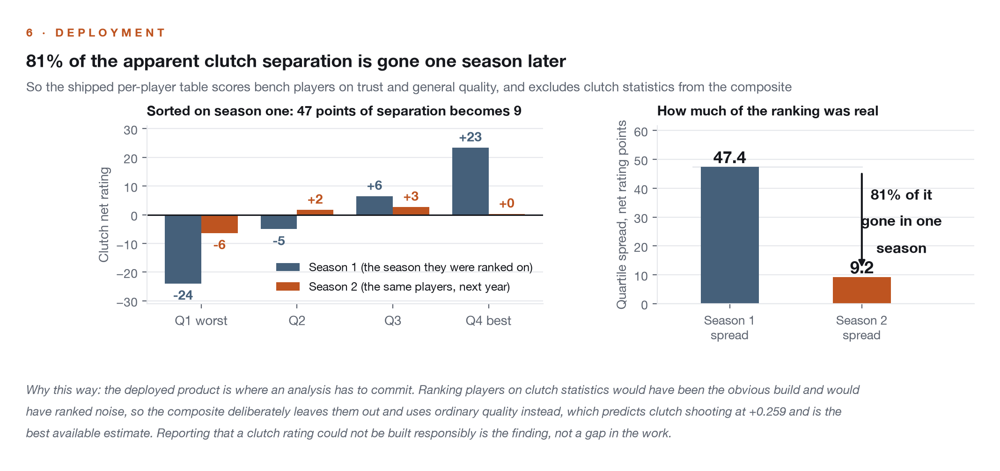

Clutch Minutes and Bench Value
Which bench players earn minutes when the game is tight, and which perform once they are out there? The two halves of that question get opposite answers. Before modeling anything, this analysis tests whether clutch performance is measurable at all, and the reliability gate it builds ends up being the finding.
Which bench players are clutch?
The data can tell you who is trusted; it cannot tell you who performs. A bench player's whole clutch season is a median of 46 possessions. Clutch shooting and clutch net rating repeat year over year at +0.03 and -0.05, statistically nothing, and a variance decomposition puts the true-skill share of clutch net rating at 0.1 percent. Coach trust is the half that exists: how much a coach promotes a bench player in the clutch repeats at +0.34, and it is predicted by age and passing, not by shooting.
Eight hundred seventy-one bench player-seasons across five seasons, with clutch defined the league's way: last five minutes, margin within five. Every predictor is computed from non-clutch minutes so nothing shares a possession with the outcome. The central measure is clutch lift, a player's share of his team's clutch minutes minus his share of ordinary minutes, which isolates the coaching decision from simply playing a lot. Twenty-two candidate traits face a Holm-corrected screen and a player-clustered bootstrap, and the modest predictive claim is validated under both season-holdout and player-grouped schemes, which answer different operational questions and are reported separately.
Five steps, ending in a decision to leave clutch statistics out of the product they were supposed to power.





The average bench player loses 31.9 percent of his ordinary role when the game is tight; positive lift marks the players a coach actively promotes. Three traits survive the corrected screen: age, assists per 36, and assist percentage. The nulls are the striking part: true shooting, scoring rate, usage, and free throw percentage all cross zero under the player-clustered bootstrap, and the least-trusted list is full of excellent specialist shooters. Sorted into quartiles by clutch net rating, the best and worst groups are separated by 47 points of net rating in season one and 9 points in season two: 81 percent of the apparent separation evaporates in a single year.
Ordinary quality is the best available estimate of clutch quality, because non-clutch shooting predicts clutch shooting at +0.259 and nothing predicts it better. The deployed per-player table therefore scores bench players on trust and general quality and deliberately excludes clutch statistics from the composite, because a clutch rating built from clutch statistics would rank noise. A clutch reputation built on one bench season is statistically indistinguishable from noise in this data.

The measure's face-validity check, named. The most-trusted list is a roll call of recognized closers; the least-trusted list is the more revealing one, disproportionately specialist shooters and young scorers their coaches remove when the game tightens, which previews the finding that nothing in a shooting profile predicts clutch promotion.
Largest clutch lift
| Player | Season | Lift |
|---|---|---|
| De'Andre Hunter | 2024-25 | +0.097 |
| Russell Westbrook | 2022-23 | +0.076 |
| Bennedict Mathurin | 2025-26 | +0.070 |
| Lonzo Ball | 2024-25 | +0.059 |
| Malik Monk | 2023-24 | +0.052 |
| Larry Nance Jr. | 2022-23 | +0.050 |
Largest clutch benching
| Player | Season | Lift |
|---|---|---|
| Shaedon Sharpe | 2022-23 | -0.075 |
| Jordan Clarkson | 2021-22 | -0.070 |
| Payton Pritchard | 2023-24 | -0.069 |
| Sam Hauser | 2023-24 | -0.066 |
| Jalen Wilson | 2024-25 | -0.058 |
| Sam Merrill | 2024-25 | -0.058 |
The 688 player-seasons with 20 or more clutch possessions are sortable in the clutch trust explorer.
Sort every bench player-season
The 688 player-seasons with 20 or more clutch possessions (of the 871 in the analysis frame), sortable by any column. Clutch lift is the coaching decision isolated from playing time; the reliability gate applies, so no column here measures clutch skill, and the bench score deliberately excludes clutch statistics.
Bench acquisition should weight what repeats: coach trust, ordinary efficiency, and on-court impact. Ordinary quality is also the best available estimate of clutch quality, since nothing predicts clutch shooting better than shooting. A clutch reputation built on one bench season is statistically indistinguishable from noise in this data, and paying a premium for it finds no support here.
The review asked whether leave-one-season-out validation flattered the model by letting the same player appear in training and test seasons. Player-grouped validation, where no player crosses the train-test boundary, produced materially similar results: the modest edge from age and passing carried to held-out players essentially unchanged, providing no evidence of repeated-player inflation. The review also tightened several universal negatives into scoped claims and moved p-values to the finite-sample estimator.
The reliability findings concern bench players specifically; high-minute stars accumulate enough clutch possessions that their clutch measures may carry more signal, an extension this analysis does not test. Clutch lift records what a coach did, not whether it was correct: a player with negative lift may be a matchup casualty. Age is a compound of experience, contract status, and reputation, none separable here. The power analysis is explicit that this design cannot grade coaching decisions, because the outcome measure is too noisy to grade anything with.
Technical deep dive
Technical highlights
- Reliability before interpretation: no clutch measure is used as a player attribute until it repeats year over year, and the two that fail the gate are retired from the analysis rather than modeled.
- Two independent methods agree on the central null: year-over-year correlation near zero, and a variance decomposition that regresses squared deviations on inverse possessions to split spread into skill and noise.
- Clutch lift subtracts a player's ordinary role, so the trust measure cannot be gamed by minutes volume; its face validity check surfaces recognized closers at the top and benched specialists at the bottom.
- Both validation schemes reported side by side with distinct interpretations: season-holdout for projecting known players, player-grouped for evaluating unfamiliar targets.
Key decisions
- Why lead with a reliability gate instead of a model?
- Because a median of 46 possessions cannot distinguish a good player from a lucky one, and any model trained on that target would rank luck. Proving the target is noise is the most decision-relevant output here.
- Why exclude clutch statistics from the deployed score?
- The gate showed there is nothing in them to weight. The composite uses only measures that repeat: trust, ordinary efficiency, and on-court impact.
Technology stack
Built on five seasons (2021-22 through 2025-26) of NBA Stats dashboard data compiled into a local SQLite database of 97 tables. All six research analyses run against the same database. Notebooks available by email.